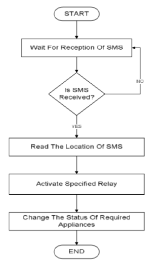

Muhammad Irfan Rind
Abdul Ghafoor
Abdul Ghafoor
| Introduction | High Level Design | Design | Results | Conclusion | Appendix |
GSM Based Home Automation
Participants
 |
 |
| M irfan Rind | Abdul Ghafoor |
Introduction
The objectives of this assignment are:- Our semester project is to design a GSM based home automation system. The device can control domestic equipment for energy saving applications.
- Our objective in this project is to control our home appliances through SMS.

Such devices are commercially available in the market, and come with a variety interfaces like GSM, WiFi and Ethernet. These devices are central component of fully automated "smart homes".
How we Start ?
When our mentor assigned us to this project we were confused how start and as we started reviewing literature things became very clear.Deligation of Tasks
High Level Design
The module recieves the SMS and passes it to Microcontroller and microcontroller will compare it with the preloaded set of messages. After getting result microcontroller will give instruction to relay and relay will finally take action as defined by user.
Brief Description of Major Component
Microcontroller
Although many micro-controllers are available in the market, ATMEGA328P is the most popular of all because of its features, cost and rich set of resouces available on the internet. Arduino boards are also developed on this micro-controller.With program memory of 32 Kbytes ATMEGA328P applications are many. With various Power Saving modes it can work as a portable embedded device. With Watchdog timer to reset under error it can be used on systems with minimal human interference. With advanced RISC architecture, the controller executes programs quickly. Also with in chip temperature sensor the controller can be used at extreme temperatures. These all features add up to selection of ATMEGA328P for our project.

- It has EEPROM memory of 1KB
- It has SRAM memory of 2KB
- It has 8 pins for Analouge to Digital Conversion operation (denoted by PA0 to PA7).
- It has 14 (fourteen) Digital pins specified by (D0 to D13)
GSM Shield 900
Mobile phone is a revolutionary invention of the 20th century. It was primarily designed for making and receiving calls & text messages, but it has become the whole world after the smart phone comes into the picture. In this project we are building a home automation system, where one can control the home appliances, using the simple GSM based phone, just by sending SMS through his phone. In this project, no smart phone is needed, just the old GSM phone will work to switch ON and OFF any home electronic appliances, from anywhereShield 900 Front

Shield 900 Back

IMPORTANT NOTE
We are using GSM 900 shield. We want to use GSM module but we can't due to unavailablity of it and registration of GSM device with PTA. To check GSM there are two LEDs one is power led showing power in GSM and other is status led showing SIM status. If status led is blinking with the pause of three seconds then GSM is working correctly. From our experience working on this project we realized that there is a power issue in the GSM shield. It takes almost 1.5A for first five seconds then 150mA is needed continously. Power can be given through the adapter as well as power supply. But one thing which is very important is the you are not supposed to take power from the GSM shield for microcontrolar not for any other usage. It will heatup your Shield and it can be damaged. An other point is you are not supposed to use Rx Tx pins for GSM because it cause issue while loading any programe so use any Digital pins for this purpose we are using 7 and 8 pins for GSM .
Nokia 5110 LCD
- Display the status of system.
- Display the value of Temprature
- Operating Voltage is 2.7V to 3.3V
- Current consumption is 6mA
- Has a 84×48 pixel monochrome display
- Works using SPI interface
- Consists of Philips PCD8544 interface chip for easy interfacing
- Can be easily interfaced with Arduino
- Supports decent graphics of bitmap images
- Available in green and blue backlight.

DHT22 Sensor
- Measures the temprature and humidity, transmits data over I2C protocol.

4 Channel Relay
-
This is a 5V 4-channel relay interface board, and each channel needs a 15-20mA driver current. It can be used to control various appliances and equipment with large current. It is equipped with high-current relays that work under AC250V 10A or DC30V 10A. It has a standard interface that can be controlled directly by microcontroller.
A relay is an electromagnetic switch used to turn on/off a circuit through a low power control signal, or where several circuits must be controlled by one signal.
- Firstly we interfaced GSM module with Arduino just to send and recieve SMS through GSM.
- We started off our work through basic interfacing of LCD and DHT22 sensor with Arduino Board
- We also interface GSM with Relay For the Purpose how we have to work in project
- Then we make a breadboard circuit where we use leds for the purpose of load. Through this basic implementation we achieved 100% output from this prototype.
- GSM Shield 900
- Four Channel Relay
- Nokia 5110 LCD
- DHT22 Sensor
Implementation Process
Here is diagram where we confirmed that GSM is functioning and which pins we have to use.


Next Plan
After Prototype we move forward for PCBs we make two PCBs. 1st PCB for Micro-controller and 2nd For GSM , LCD , Relay , and sensor.Design of Project
Electrical Circuit
Here is PCB layout of microcontroller board. Alot of time and thought was invested in the process to squeeze all the components together in the minimal space.
Milled PCB

1) First PCB for microcontroller we just insert 14 pin connector therefore our required component setting like sensor, LCD , Relay
Functional PCB
when we come up with a fully soldered microcontrolar board then next task is to burn the boatloader program on the micro-controller. For burning programme we first did bootloader through SPI protocol. Then we upload test programme to test 13 pin LED. And to our surprise we succeed to bootload the micro-controller at the very first attempt.
Milled PCB 2
In second PCB there is network for GSM , Relay and Sensor.

2)
2nd PCB in order to design sandwich shape just put GSM on that Board . There are three Pin using therefore Rx,Tx and Ground after making two boards, we realize that there will be irregular shape of our project. From our experience, we come to conclude that where possible design of product with mutliple boards should be avoided.
PCB Milling Machine
We milled our PCB using the milling machine available inp our lab.

Bill of Material
Here is the bill of material of our micro-controller based device.

Bill of Material for Second Board
PCB Layout
Software Development
In a pictorial format you may describe the flow of your algorithm and how you have used the functions to implement the code in an efficient way.

Design of Finished Product
Here is printed enclosure of our module. The enclosure has width of 2.5" while the hieght is 3"
Front View

Top View

Our 3D Printer

Results
At last we came up with functional product and here is the video link of functional product.
PCB Layout
Commercialization Aspects
GSM Based Home Automation has a great potential for commercialization. Automation of equipment and plants through Internet of Things is being used widely. So if a product is commercialized it's price matters. We made this device just to control four loads of any kind. So it's price is seven thousands only. The price of the device can be lowered significantly by using GSM module instead of shield which is the main component of our project. As I mentioned above that we are using GSM shield which is very expensive as compared to GSM module. It's price can be vary by varing number of loads.
Conclusions
This is our semester project for the module Introduction to Embedded System. We learnt some life long things from it includings some technical Skills Software as well as Hardware skills. And learn how to read datasheets of different components.We learn how to search websites and also learn how to choose compnents, we face problem while choosing GSM shield due to PTA registration issue. We choose ATMEGA328 IC because it is full filling our requirements. We learn how to interface different components with micro-controller.
SOFTWARE CASE:
We learnt EAGLE software by making of different PCBs including simple circuit, micro-controllar and PCB for interfacing different components. We have full command on it now. And we also use Solid Works for making enclosure for our product using 3D printer(ULTIMAKER). We have also command on it. We aslo make sheet for laser cutter for LCD. And We also learn programing Skills from this project and learn Arduino language for writting programes. C language is used in arduino programming. We faced alot of problems while doing programming and while routing of PCBs and making casing is another big challenge for us. These issues are very helpful for us to learn different things in detail.
HARDWARE CASE:
In case of Hardware we learnt soldering of SMT as well as DIP components on Printed Circuit Board. And we also learnt the assembly of components. Although we faced alot of issues in assembly of components because we take very compact measurements of our product which cause a big problem for us. We also learned interfacing of components(GSM, SENSOR,NOKIA LCD,RELAY ) with Arduino.
In conclusion we learn many things as we were facing problem and one thing is that we learn how to tackle with the problem and how to search about problems and how to solve them. Problems can be of any kind.
It can be interfacing of components, routing of PCBs, soldering of components, Programming , working on Solid Works, assembly problems and many more.
Appendix
Total expenditure of our project is given below component wise.
Eagle PCB Layout files
Arduino Code
| Report Submitted on Time | ....................... |
| Matlab Profeciency | ....................... |